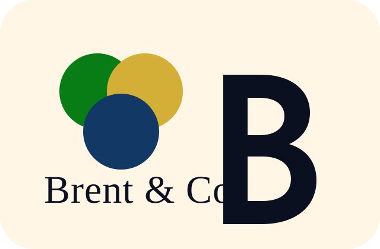
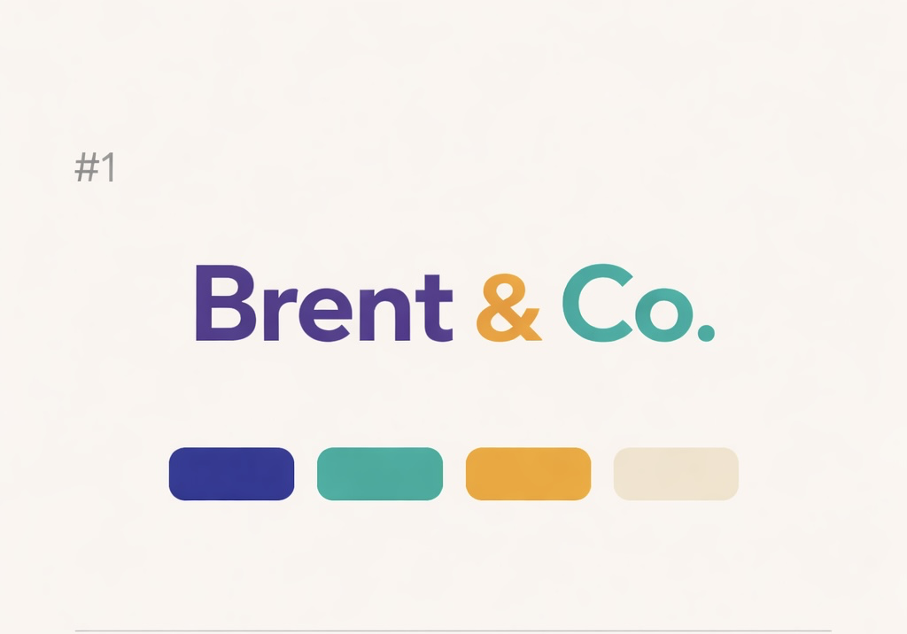
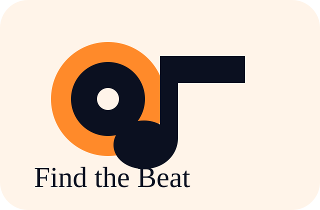
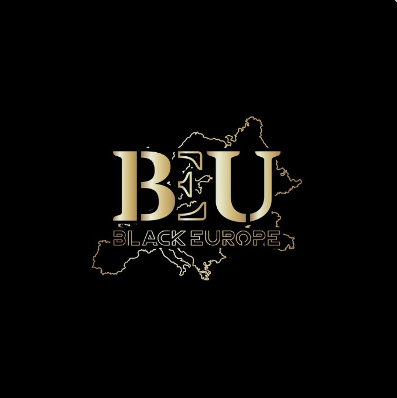

Let’s Cook Ya’ll
A warm cooking-skills app for recipes, Cook 101 lessons, Shay’s Kitchen, meal planning, and hosting.
Launch Let’s Cook
Live on Render


Warm tools for real community life
Brent & Co. connects practical, creative platforms that help people learn, discover, gather, rebuild, and feel at home wherever they are.
Brent & Co. platforms
Each platform has its own personality, but they all belong to the same Brent & Co. family.
A warm cooking-skills app for recipes, Cook 101 lessons, Shay’s Kitchen, meal planning, and hosting.

Music energyA creative music platform for discovery, community rhythm, artists, events, and culture through sound.

Cultural compassA global, location-aware cultural compass for Black-owned places, events, food, community, and travel.
A practical, supportive career platform for jobs, training, resumes, resources, and rebuilding with dignity.
Public launch links
Source code links are intentionally kept off the public homepage. These are the public app doors under the Brent & Co. umbrella.
The umbrella
Brent & Co. is the front porch for the whole ecosystem. It should be the domain people remember, while each product gets its own dedicated app, repo, and deployment.